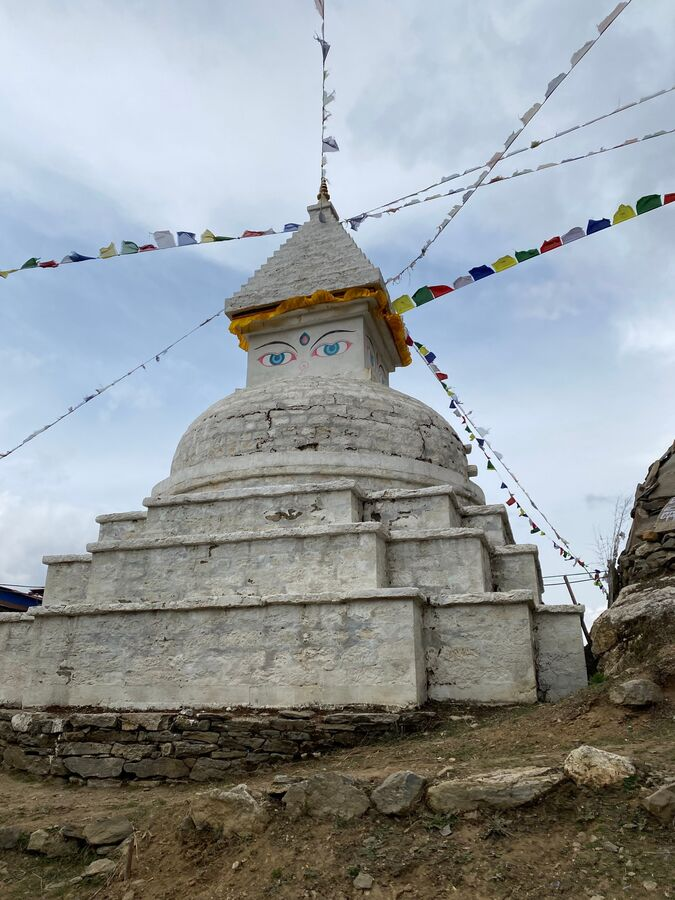

Die Nacht auf knapp 4.000 Höhenmeter war etwas besser. Allerdings war es nach wie vor kalt im Zimmer. Und die Tatsache, dass wir das erste Mal ein Doppelbett bekommen hatten, aber beide gerade sehr erkältet waren, ist eher als tragisch zu bezeichnen. Außerdem, wie (un-)romantisch ist es, wenn man in einem eiskalten Zimmer zu zweit in zwei separaten Schlafsäcken in einem Doppelbett liegt? Ganz abgesehen von den Halsschmerzen. Man fragt sich ja doch, wie die Nepalis hier oben Nachwuchs zeugen, wenn unsereins schon in den angeblich wärmsten Monaten April/Mai sämtliche Romantik einfriert.
Um Punkt 7 Uhr ging es wieder los. Die Yeti-In Lodge war schön, aber leider in der untersten Talsenke. Um da herauszukommen, mussten wir erst einmal zu Anfang bergauf. Dann ging es aber erst einmal lange bergab. Es wurde grüner. Es gab mehr Bäume. Überall wuchs wieder Rhododendron. Teilweise blühten sie sogar noch.
Nach gut 3,5 Km ging es dann leider steil bergauf nach Mong La. Dafür brauchten wir gut eine Stunde, wenn nicht noch mehr. Es war der kräftezehrendste Teil der Strecke. Um 9:40 Uhr waren wir Oben angekommen. Dort machten wir erst einmal Rast und tranken Tee.

Der Rest der Strecke ging dann größtenteils bergab. Das nächste Etappenziel war Kyangjuma, dort waren wir auf dem Hinweg rechts (nach unten Richtung Fluss) zum Kloster Tengboche abgebogen. Nun blieben wir auf der Höhe und gingen auf dem Weg, den der alte Sherpa gebaut hatte. Es gab wieder viele Blumen.

Die ganze Etappe war anstrengend, aber wir freuten uns umso mehr, als wir in unserem alten Hotel in Namche Bazar einkehren konnten. Wir bekamen unser altes. Zimmer mit Duschbad und duschten auch ausgiebig. Das gab uns neue Kraft.
Naran und ich stiegen dann noch zu den Geschäften herab und kauften Hustensaft, Lutschpastillen, Äpfel und Gebäck.
Yeşim und ich ruhten uns danach etwas aus. Nach dem Abendessen gingen wir ebenfalls frühzeitig ins Bett. Und ich mache jetzt auch Schluss für heute. Gute Nacht.